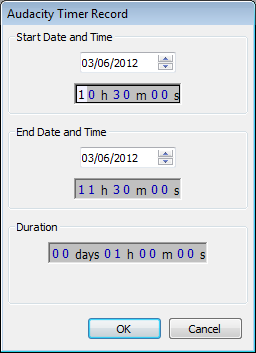
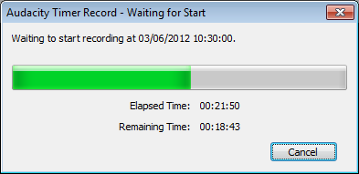
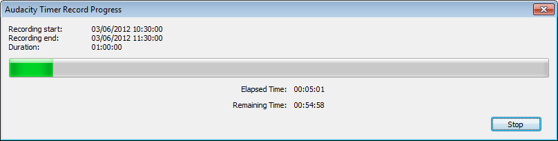

Timer Record
From Audacity Manual
- Accessed by:
- 
Before you start
Before you start a Timer Record session it is very important that you make all necessary settings in Audacity as while a Timer Record session is in progress, including in the period while Audacity is waiting to start the recording, the Audacity controls and menus will be inoperable until the recording finishes, or is Stopped/Cancelled.
In particular you need to pay close attention to setting the input signal level as Audacity's sliders cannot be used during a Timer Record session (you may though have a hardware gain control on your input device which would allow you to adjust the signal level during a Timer record session).
Automatic Save of Timer Recordings
If you Save as an Audacity Project to a named location prior to setting up the Timer Record session, then when the session finishes or if you stop the recording early, Audacity will automatically save the project for you. At that point you could if desired close the project - there would be no "Save Changes?" dialog to answer because the project is already saved.
If you have not saved the project prior to setting up the Timer Record session then when the session completes (or if you stop the Timer Recording) Audacity will prompt you to save the project. By default you will first see the standard "Save Project" warning, otherwise if you have turned that warning off in Warnings Preferences you will be prompted immediately for the name and location for saving the project. If you do not need to save the project, click in either the Warning or in the Save Project dialog.
Initiating a Timer Record session
brings up the Timer Record setup dialog for scheduling when a recording ends and optionally, when it begins. Pressing "OK" starts the process of recording, or waiting for the recording to start.
"Start Date and Time" shows the current live time on opening the dialog, meaning that the recording you schedule will start immediately unless you change this control. You can set the end of the scheduled recording either by specifying this at "End Date and Time", or by choosing the length of the recording at "Duration". The digits in the time spinboxes are interlinked, so that typing on a digit or incrementing it forwards or backwards with keyboard up arrow or down arrow updates the preceding digits. The time controls themselves are also interlinked, so that "Start Date and Time" updates the "End Date and Time", and changing the "End Date and Time" modifies the "Duration" (and vice versa).
- If you need to change a date forwards, incrementing either hour digit in the time spinboxes with keyboard up arrow will always increment the date automatically.
- If you want to start an immediate recording, changing only the Duration is often the simplest method because this changes the End Date if necessary as well as the End Time.
There is no default "Duration". When you open Timer Record next time, Audacity remembers the duration that was used for the previous scheduled recording.
| It isn't currently possible to undertake any other activities in Audacity while recordings are running or waiting to start. To work in other computer programs while Timer Record is running, use the Task Switcher utility on your system, usually ALT + TAB. |
Waiting for Start dialog
If you had set the recording's Start Date and Time in advance of the current time, pressing in the setup dialog will cause the Waiting for Start dialog to appear:
- 
This shows the elapsed time since you initiated the timed recording and the remaining time until it starts to record. If you want to abort this recording before it starts, press the button.
Timer Record Progress dialog
When the recording starts, the Timer Record Progress dialog appears:
- 
While the recording is in progress you can stop the recording at any time by pressing the button, or (on Windows and Mac) use the ESC key on the keyboard. This stops the recording, leaving the recorded track in place, just like pressing the Stop button in Transport Toolbar when manually starting a recording.
If desired (for example, to immediately remove a recording you don't want to keep), you can abort the recording entirely by clicking the window Close button (usually colored red). This both stops the recording and removes the audio track that had been recorded in that Timer Record session.
| If you remove the track by using window Close then decide to keep the recording, you must choose to restore the recording before taking any other actions such as restarting the recording. Otherwise, the removed track will be lost permanently. |